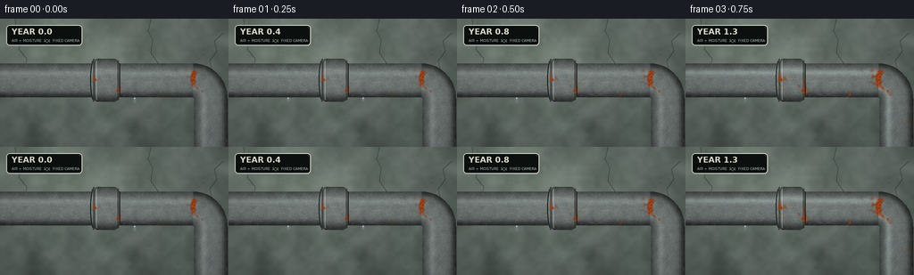
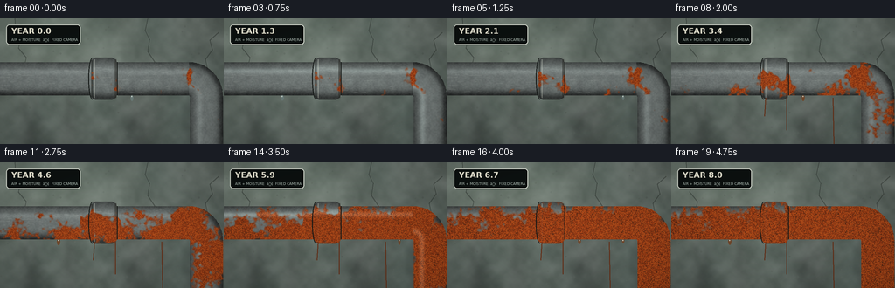
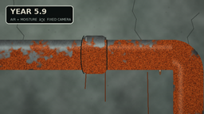
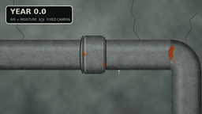

CODING AGENTS AS PIXEL WORLD MODELS
traex/GPT-5.6-Sol · material_0048
点击播放 · 原生 RGB 像素
逐轮保存的候选
回放视频、检查图与代码变化。
每份候选均可单独播放。实际图片检查记录在下方工具轨迹中。
候选 01播放与检查图
点击播放 · 原生 RGB 像素


展开代码变化
--- 上一保存版本
+++ 本次保存版本
@@ -0,0 +1,205 @@
+from pathlib import Path
+import json, math
+import numpy as np
+from PIL import Image, ImageDraw, ImageFont, ImageFilter
+import artifact_io
+
+CASE = Path(__file__).resolve().parent
+SPEC = json.loads((CASE/'task_spec.json').read_text())
+W,H,N,FPS = SPEC['width'],SPEC['height'],SPEC['frames'],SPEC['fps']
+S=3
+w,h=W*S,H*S
+rng=np.random.default_rng(481903)
+
+def smoothstep(a,b,x):
+ z=np.clip((x-a)/(b-a),0,1)
+ return z*z*(3-2*z)
+
+def noise_field(shape, cells, seed):
+ rr=np.random.default_rng(seed)
+ small=rr.random((max(2,shape[0]//cells),max(2,shape[1]//cells))).astype(np.float32)
+ im=Image.fromarray(np.uint8(small*255)).resize((shape[1],shape[0]),Image.Resampling.BICUBIC)
+ return np.asarray(im,dtype=np.float32)/255.
+
+def blur_field(arr, radius):
+ return np.asarray(Image.fromarray(np.uint8(np.clip(arr,0,1)*255)).filter(ImageFilter.GaussianBlur(radius)),dtype=np.float32)/255.
+
+Y,X=np.mgrid[0:h,0:w].astype(np.float32)
+xf,yf=X/S,Y/S
+
+# Damp, out-of-focus concrete wall: layered mineral grain and broad stains.
+n1=noise_field((h,w),48,301)
+n2=noise_field((h,w),16,302)
+n3=noise_field((h,w),5,303)
+broad=noise_field((h,w),90,304)
+vert=(yf/H)
+base=np.zeros((h,w,3),np.float32)
+base[:]=[91,100,94]
+base += ((n1-.5)*22 + (n2-.5)*8 + (n3-.5)*2)[...,None]
+base += (7*(1-vert))[...,None]
+# cool shadow top/right
+base += np.stack([-5*broad,-2*broad,-2*broad],axis=-1)
+# diffuse damp streaks on wall behind the pipe
+for cx,amp,width in [(35,-15,14),(78,-9,8),(156,-13,20),(225,-16,13)]:
+ streak=np.exp(-((xf-cx)/width)**2)*smoothstep(8,138,yf)
+ irregular=.55+.45*noise_field((h,w),22,int(cx*11))
+ base += (streak*irregular*amp)[...,None]*np.array([.72,.95,.80])[None,None,:]
+# faded light patch from upper left
+light=np.exp(-(((xf-55)/110)**2+((yf-18)/72)**2))
+base += light[...,None]*np.array([20,22,18])[None,None,:]
+
+# Wall cracks and speckles on a transparent overlay.
+wall=Image.fromarray(np.uint8(np.clip(base,0,255)),'RGB')
+d=ImageDraw.Draw(wall,'RGBA')
+# hairline cracks, mostly above the pipe
+cracks=[[(17,0),(18,13),(24,22),(21,34),(30,45),(28,53)],
+ [(169,0),(166,14),(171,24),(169,38),(177,50),(175,59)],
+ [(250,16),(240,25),(243,36),(235,47),(237,57)]]
+for pts in cracks:
+ p=[(int(a*S),int(b*S)) for a,b in pts]
+ d.line(p,fill=(37,43,39,105),width=1*S)
+ d.line([(x+S,y) for x,y in p],fill=(155,158,145,30),width=1)
+for _ in range(180):
+ x=int(rng.integers(0,w)); y=int(rng.integers(0,h)); r=int(rng.integers(1,4))
+ shade=int(rng.integers(45,130)); alpha=int(rng.integers(15,40))
+ d.ellipse((x-r,y-r,x+r,y+r),fill=(shade,shade+5,shade,alpha))
+base=np.asarray(wall,dtype=np.float32)
+
+# Pipe centerline and metal silhouette.
+mask_img=Image.new('L',(w,h),0); md=ImageDraw.Draw(mask_img)
+# Smooth centerline polyline: straight run into a 90-degree elbow.
+pts=[(-15*S,69*S),(216*S,69*S)]
+for a in np.linspace(-math.pi/2,0,22):
+ pts.append(((216+20*math.cos(a))*S,(89+20*math.sin(a))*S))
+pts += [(236*S,159*S)]
+md.line([(int(x),int(y)) for x,y in pts],fill=255,width=38*S,joint='curve')
+pipe_mask=np.asarray(mask_img,dtype=np.float32)/255.
+# Sleeve/coupling around the straight pipe.
+collar_img=Image.new('L',(w,h),0); cd=ImageDraw.Draw(collar_img)
+cd.rounded_rectangle((103*S,45*S,134*S,93*S),radius=7*S,fill=255)
+collar_mask=np.asarray(collar_img,dtype=np.float32)/255.
+fullmask=np.maximum(pipe_mask,collar_mask)
+
+# Approximate local normal coordinate for cylindrical lighting.
+qh=(yf-69)/19
+qv=(xf-236)/19
+r=np.sqrt((xf-216)**2+(yf-89)**2)
+qa=(r-20)/19
+# choose by zones around elbow
+q=np.where(xf<=216,qh,np.where(yf>=89,qv,qa))
+q=np.clip(q,-1,1)
+# collar uses y-normal and is slightly brighter
+q=np.where(collar_mask>.2,np.clip((yf-69)/24,-1,1),q)
+shade=0.38+0.50*np.sqrt(np.maximum(0,1-q*q))
+shade += .16*np.exp(-((q+.42)/.18)**2) # narrow metallic highlight
+shade -= .20*np.exp(-((q-.88)/.18)**2) # dark underside
+metalgrain=.65*noise_field((h,w),4,711)+.35*noise_field((h,w),13,712)
+metalgrain=(metalgrain-.5)*17
+metal=np.empty((h,w,3),np.float32)
+for c,bc in enumerate([126,134,132]):
+ metal[...,c]=bc*shade+metalgrain
+# very subtle galvanized mottling
+mottle=blur_field(noise_field((h,w),8,713),2*S)-.5
+metal += mottle[...,None]*np.array([15,17,15])[None,None,:]
+
+# Rust propensity: fixed mineral texture plus seeded corrosion around seams and underside.
+rust_noise=.44*noise_field((h,w),7,810)+.34*noise_field((h,w),17,811)+.22*noise_field((h,w),3,812)
+rust_noise=blur_field(rust_noise,0.7*S)
+score=.62*rust_noise
+# corrosion blooms placed across the surface, heavy at the coupling and elbow
+seeds=[(18,76,15,.50),(49,61,12,.42),(75,82,18,.55),(107,67,12,.80),
+ (130,77,16,.73),(158,57,14,.52),(184,82,18,.68),(213,63,16,.90),
+ (230,83,13,.80),(241,112,20,.75),(231,138,14,.60)]
+for cx,cy,rad,amp in seeds:
+ jitter=.72+.28*noise_field((h,w),10,1000+cx)
+ score += amp*np.exp(-(((xf-cx)/(rad*1.2))**2+((yf-cy)/rad)**2))*jitter
+score += .20*smoothstep(.05,.95,q) # damp underside corrodes first
+# vertical seam and collar edges are vulnerable
+score += .31*np.exp(-((xf-105)/2.2)**2)*np.exp(-((yf-69)/26)**2)
+score += .28*np.exp(-((xf-133)/2.4)**2)*np.exp(-((yf-69)/26)**2)
+score += .18*np.exp(-((xf-216)/5)**2)*np.exp(-((yf-69)/23)**2)
+
+# Fine scratches and galvanizing seams fixed through time.
+scratch=Image.new('RGBA',(w,h),(0,0,0,0)); sd=ImageDraw.Draw(scratch,'RGBA')
+for _ in range(55):
+ x0=float(rng.uniform(-5,205)); yy=float(rng.uniform(53,88)); ln=float(rng.uniform(2,17))
+ sd.line((int(x0*S),int(yy*S),int((x0+ln)*S),int((yy+rng.uniform(-.5,.5))*S)),fill=(235,240,229,int(rng.integers(20,60))),width=1)
+# ring seams and specular rim
+sd.line((105*S,48*S,105*S,90*S),fill=(35,39,36,150),width=2*S)
+sd.line((108*S,47*S,108*S,91*S),fill=(224,229,214,90),width=1*S)
+sd.line((132*S,47*S,132*S,91*S),fill=(42,43,39,150),width=2*S)
+sd.line((134*S,49*S,134*S,89*S),fill=(210,216,202,75),width=1*S)
+scratch_arr=np.asarray(scratch,dtype=np.float32)
+
+# Background remains fixed; temporal weather and corrosion changes produce the timelapse.
+frames=[]
+font_path='/usr/share/fonts/truetype/dejavu/DejaVuSans.ttf'
+font_bold_path='/usr/share/fonts/truetype/dejavu/DejaVuSans-Bold.ttf'
+for i in range(N):
+ t=i/(N-1)
+ # Ease in so the first frames still read as fresh galvanized steel.
+ age=smoothstep(0,1,t)
+ threshold=1.26-0.86*age
+ rust=smoothstep(threshold-.09,threshold+.10,score)
+ # A small amount of tarnish precedes red rust.
+ tarnish=smoothstep(threshold-.22,threshold+.18,score)*(.30+.70*age)
+ fine=noise_field((h,w),3,900)
+ orange=np.stack([154+50*fine,55+34*fine,18+10*fine],axis=-1)
+ dark=np.stack([68+32*fine,30+18*fine,17+10*fine],axis=-1)
+ rustcol=orange*(.46+.30*rust[...,None])+dark*(.54-.30*rust[...,None])
+ # black pits appear inside mature blooms
+ pit_pattern=noise_field((h,w),2,905)
+ pits=smoothstep(.73,.84,rust)*smoothstep(.67,.82,pit_pattern)*age
+ pipe=metal*(1-(.24*tarnish)[...,None]) + np.array([80,70,55])[None,None,:]*(.24*tarnish)[...,None]
+ pipe=pipe*(1-rust[...,None])+rustcol*rust[...,None]
+ pipe=pipe*(1-.52*pits[...,None])+np.array([36,25,19])[None,None,:]*(.52*pits[...,None])
+ # Rainy phases add a cool glossy film without camera motion.
+ wet=max(0,math.sin((i*.63)-.8))**6
+ pipe += wet*fullmask[...,None]*np.exp(-((q+.5)/.16)**2)[...,None]*np.array([30,35,34])[None,None,:]
+ arr=base.copy()
+ arr=arr*(1-fullmask[...,None])+pipe*fullmask[...,None]
+ im=Image.fromarray(np.uint8(np.clip(arr,0,255)),'RGB').convert('RGBA')
+ # apply scratches, which disappear where severe rust overtakes the steel
+ sa=scratch_arr.copy(); sa[...,3]*=(1-.85*rust)
+ im=Image.alpha_composite(im,Image.fromarray(np.uint8(np.clip(sa,0,255)),'RGBA'))
+ dr=ImageDraw.Draw(im,'RGBA')
+ # Coupling rim shadows/highlights, increasingly mottled but still visible.
+ dr.arc((101*S,45*S,110*S,93*S),90,270,fill=(20,24,22,100),width=1*S)
+ dr.line((134*S,50*S,134*S,88*S),fill=(24,27,24,105),width=1*S)
+ # drips under pipe: moisture beads pulse and rust-coloured runoff grows with age.
+ drops=[(67,88,1.7),(151,88,1.4),(201,88,1.2)]
+ for k,(dx,dy,rr) in enumerate(drops):
+ pulse=max(0,math.sin(i*.72+k*1.8))
+ if pulse>.42:
+ length=(2+5*pulse)*S
+ col=(105,122,119,150) if age<.38 else (112,72,44,175)
+ dr.ellipse(((dx-rr)*S,dy*S,(dx+rr)*S,dy*S+length),fill=col)
+ dr.ellipse(((dx-.55)*S,(dy+.7)*S,(dx+.15)*S,(dy+2.0)*S),fill=(225,233,223,100))
+ # Rust runoff streaks below pipe on the wall become visible over years.
+ if age>.18:
+ for k,dx in enumerate([108,132,185]):
+ a=int(72*smoothstep(.18,.9,age)*(0.65+0.35*math.sin(k+1)))
+ dr.line((dx*S,91*S,(dx+(k-1)*1.2)*S,(112+16*k)*S),fill=(100,48,25,a),width=max(1,S))
+ # Documentary timelapse slate.
+ dr.rounded_rectangle((7*S,7*S,92*S,30*S),radius=4*S,fill=(12,17,16,180),outline=(220,226,214,50),width=1*S)
+ try:
+ f1=ImageFont.truetype(font_bold_path,9*S)
+ f2=ImageFont.truetype(font_path,4*S)
+ except OSError:
+ f1=f2=ImageFont.load_default()
+ year=8*t
+ dr.text((13*S,9*S),f'YEAR {year:03.1f}',font=f1,fill=(242,239,220,240),stroke_width=0)
+ dr.text((13*S,22*S),'AIR + MOISTURE ⢠FIXED CAMERA',font=f2,fill=(188,203,194,215))
+ # mild timelapse exposure breathing and lens vignette
+ rgb=np.asarray(im.convert('RGB'),dtype=np.float32)
+ exposure=1.0 + .018*math.sin(i*.84)
+ rgb*=exposure
+ cx=(xf-W/2)/(W*.72); cy=(yf-H/2)/(H*.75)
+ vign=np.clip(1-.19*(cx*cx+cy*cy),.76,1)
+ rgb*=vign[...,None]
+ small=Image.fromarray(np.uint8(np.clip(rgb,0,255))).resize((W,H),Image.Resampling.LANCZOS)
+ frames.append(np.asarray(small,dtype=np.uint8))
+
+frames=np.stack(frames)
+artifact_io.save(frames,CASE)
+print('saved',frames.shape,frames.dtype,'to',CASE)
候选 02播放与检查图
点击播放 · 原生 RGB 像素
展开代码变化
--- 上一保存版本
+++ 本次保存版本
@@ -189,7 +189,7 @@
f1=f2=ImageFont.load_default()
year=8*t
dr.text((13*S,9*S),f'YEAR {year:03.1f}',font=f1,fill=(242,239,220,240),stroke_width=0)
- dr.text((13*S,22*S),'AIR + MOISTURE ⢠FIXED CAMERA',font=f2,fill=(188,203,194,215))
+ dr.text((13*S,22*S),'AIR + MOISTURE - FIXED CAMERA',font=f2,fill=(188,203,194,215))
# mild timelapse exposure breathing and lens vignette
rgb=np.asarray(im.convert('RGB'),dtype=np.float32)
exposure=1.0 + .018*math.sin(i*.84)
可观测工具轨迹
实际执行的命令与返回图片。
命令 1exit 0
/bin/bash -lc "cat prompt.txt && printf '\\n---RULES---\\n' && cat GENERATION_RULES.md && printf '\\n---SPEC---\\n' && cat task_spec.json"
命令 2exit 0
/bin/bash -lc "find . -maxdepth 2 -type f -printf '%p\\n' | sort && printf '\\n--- binaries ---\\n' && command -v ffmpeg || true && command -v python3 || true"
命令 3exit 0
/bin/bash -lc 'cat artifact_io.py'
命令 4exit 0
/bin/bash -lc "cat > generate.py <<'PY'
from pathlib import Path
import json, math
import numpy as np
from PIL import Image, ImageDraw, ImageFont, ImageFilter
import artifact_io
CASE = Path(__file__).resolve().parent
SPEC = json.loads((CASE/'task_spec.json').read_text())
W,H,N,FPS = SPEC['width'],SPEC['height'],SPEC['frames'],SPEC['fps']
S=3
w,h=W*S,H*S
rng=np.random.default_rng(481903)
def smoothstep(a,b,x):
z=np.clip((x-a)/(b-a),0,1)
return z*z*(3-2*z)
def noise_field(shape, cells, seed):
rr=np.random.default_rng(seed)
small=rr.random((max(2,shape[0]//cells),max(2,shape[1]//cells))).astype(np.float32)
im=Image.fromarray(np.uint8(small*255)).resize((shape[1],shape[0]),Image.Resampling.BICUBIC)
return np.asarray(im,dtype=np.float32)/255.
def blur_field(arr, radius):
return np.asarray(Image.fromarray(np.uint8(np.clip(arr,0,1)*255)).filter(ImageFilter.GaussianBlur(radius)),dtype=np.float32)/255.
Y,X=np.mgrid[0:h,0:w].astype(np.float32)
xf,yf=X/S,Y/S
# Damp, out-of-focus concrete wall: layered mineral grain and broad stains.
n1=noise_field((h,w),48,301)
n2=noise_field((h,w),16,302)
n3=noise_field((h,w),5,303)
broad=noise_field((h,w),90,304)
vert=(yf/H)
base=np.zeros((h,w,3),np.float32)
base[:]=[91,100,94]
base += ((n1-.5)*22 + (n2-.5)*8 + (n3-.5)*2)[...,None]
base += (7*(1-vert))[...,None]
# cool shadow top/right
base += np.stack([-5*broad,-2*broad,-2*broad],axis=-1)
# diffuse damp streaks on wall behind the pipe
for cx,amp,width in [(35,-15,14),(78,-9,8),(156,-13,20),(225,-16,13)]:
streak=np.exp(-((xf-cx)/width)**2)*smoothstep(8,138,yf)
irregular=.55+.45*noise_field((h,w),22,int(cx*11))
base += (streak*irregular*amp)[...,None]*np.array([.72,.95,.80])[None,None,:]
# faded light patch from upper left
light=np.exp(-(((xf-55)/110)**2+((yf-18)/72)**2))
base += light[...,None]*np.array([20,22,18])[None,None,:]
# Wall cracks and speckles on a transparent overlay.
wall=Image.fromarray(np.uint8(np.clip(base,0,255)),'RGB')
d=ImageDraw.Draw(wall,'RGBA')
# hairline cracks, mostly above the pipe
cracks=[[(17,0),(18,13),(24,22),(21,34),(30,45),(28,53)],
[(169,0),(166,14),(171,24),(169,38),(177,50),(175,59)],
[(250,16),(240,25),(243,36),(235,47),(237,57)]]
for pts in cracks:
p=[(int(a*S),int(b*S)) for a,b in pts]
d.line(p,fill=(37,43,39,105),width=1*S)
d.line([(x+S,y) for x,y in p],fill=(155,158,145,30),width=1)
for _ in range(180):
x=int(rng.integers(0,w)); y=int(rng.integers(0,h)); r=int(rng.integers(1,4))
shade=int(rng.integers(45,130)); alpha=int(rng.integers(15,40))
d.ellipse((x-r,y-r,x+r,y+r),fill=(shade,shade+5,shade,alpha))
base=np.asarray(wall,dtype=np.float32)
# Pipe centerline and metal silhouette.
mask_img=Image.new('L',(w,h),0); md=ImageDraw.Draw(mask_img)
# Smooth centerline polyline: straight run into a 90-degree elbow.
pts=[(-15*S,69*S),(216*S,69*S)]
for a in np.linspace(-math.pi/2,0,22):
pts.append(((216+20*math.cos(a))*S,(89+20*math.sin(a))*S))
pts += [(236*S,159*S)]
md.line([(int(x),int(y)) for x,y in pts],fill=255,width=38*S,joint='curve')
pipe_mask=np.asarray(mask_img,dtype=np.float32)/255.
# Sleeve/coupling around the straight pipe.
collar_img=Image.new('L',(w,h),0); cd=ImageDraw.Draw(collar_img)
cd.rounded_rectangle((103*S,45*S,134*S,93*S),radius=7*S,fill=255)
collar_mask=np.asarray(collar_img,dtype=np.float32)/255.
fullmask=np.maximum(pipe_mask,collar_mask)
# Approximate local normal coordinate for cylindrical lighting.
qh=(yf-69)/19
qv=(xf-236)/19
r=np.sqrt((xf-216)**2+(yf-89)**2)
qa=(r-20)/19
# choose by zones around elbow
q=np.where(xf<=216,qh,np.where(yf>=89,qv,qa))
q=np.clip(q,-1,1)
# collar uses y-normal and is slightly brighter
q=np.where(collar_mask>.2,np.clip((yf-69)/24,-1,1),q)
shade=0.38+0.50*np.sqrt(np.maximum(0,1-q*q))
shade += .16*np.exp(-((q+.42)/.18)**2) # narrow metallic highlight
shade -= .20*np.exp(-((q-.88)/.18)**2) # dark underside
metalgrain=.65*noise_field((h,w),4,711)+.35*noise_field((h,w),13,712)
metalgrain=(metalgrain-.5)*17
metal=np.empty((h,w,3),np.float32)
for c,bc in enumerate([126,134,132]):
metal[...,c]=bc*shade+metalgrain
# very subtle galvanized mottling
mottle=blur_field(noise_field((h,w),8,713),2*S)-.5
metal += mottle[...,None]*np.array([15,17,15])[None,None,:]
# Rust propensity: fixed mineral texture plus seeded corrosion around seams and underside.
rust_noise=.44*noise_field((h,w),7,810)+.34*noise_field((h,w),17,811)+.22*noise_field((h,w),3,812)
rust_noise=blur_field(rust_noise,0.7*S)
score=.62*rust_noise
# corrosion blooms placed across the surface, heavy at the coupling and elbow
seeds=[(18,76,15,.50),(49,61,12,.42),(75,82,18,.55),(107,67,12,.80),
(130,77,16,.73),(158,57,14,.52),(184,82,18,.68),(213,63,16,.90),
(230,83,13,.80),(241,112,20,.75),(231,138,14,.60)]
for cx,cy,rad,amp in seeds:
jitter=.72+.28*noise_field((h,w),10,1000+cx)
score += amp*np.exp(-(((xf-cx)/(rad*1.2))**2+((yf-cy)/rad)**2))*jitter
score += .20*smoothstep(.05,.95,q) # damp underside corrodes first
# vertical seam and collar edges are vulnerable
score += .31*np.exp(-((xf-105)/2.2)**2)*np.exp(-((yf-69)/26)**2)
score += .28*np.exp(-((xf-133)/2.4)**2)*np.exp(-((yf-69)/26)**2)
score += .18*np.exp(-((xf-216)/5)**2)*np.exp(-((yf-69)/23)**2)
# Fine scratches and galvanizing seams fixed through time.
scratch=Image.new('RGBA',(w,h),(0,0,0,0)); sd=ImageDraw.Draw(scratch,'RGBA')
for _ in range(55):
x0=float(rng.uniform(-5,205)); yy=float(rng.uniform(53,88)); ln=float(rng.uniform(2,17))
sd.line((int(x0*S),int(yy*S),int((x0+ln)*S),int((yy+rng.uniform(-.5,.5))*S)),fill=(235,240,229,int(rng.integers(20,60))),width=1)
# ring seams and specular rim
sd.line((105*S,48*S,105*S,90*S),fill=(35,39,36,150),width=2*S)
sd.line((108*S,47*S,108*S,91*S),fill=(224,229,214,90),width=1*S)
sd.line((132*S,47*S,132*S,91*S),fill=(42,43,39,150),width=2*S)
sd.line((134*S,49*S,134*S,89*S),fill=(210,216,202,75),width=1*S)
scratch_arr=np.asarray(scratch,dtype=np.float32)
# Background remains fixed; temporal weather and corrosion changes produce the timelapse.
frames=[]
font_path='/usr/share/fonts/truetype/dejavu/DejaVuSans.ttf'
font_bold_path='/usr/share/fonts/truetype/dejavu/DejaVuSans-Bold.ttf'
for i in range(N):
t=i/(N-1)
# Ease in so the first frames still read as fresh galvanized steel.
age=smoothstep(0,1,t)
threshold=1.26-0.86*age
rust=smoothstep(threshold-.09,threshold+.10,score)
# A small amount of tarnish precedes red rust.
tarnish=smoothstep(threshold-.22,threshold+.18,score)*(.30+.70*age)
fine=noise_field((h,w),3,900)
orange=np.stack([154+50*fine,55+34*fine,18+10*fine],axis=-1)
dark=np.stack([68+32*fine,30+18*fine,17+10*fine],axis=-1)
rustcol=orange*(.46+.30*rust[...,None])+dark*(.54-.30*rust[...,None])
# black pits appear inside mature blooms
pit_pattern=noise_field((h,w),2,905)
pits=smoothstep(.73,.84,rust)*smoothstep(.67,.82,pit_pattern)*age
pipe=metal*(1-(.24*tarnish)[...,None]) + np.array([80,70,55])[None,None,:]*(.24*tarnish)[...,None]
pipe=pipe*(1-rust[...,None])+rustcol*rust[...,None]
pipe=pipe*(1-.52*pits[...,None])+np.array([36,25,19])[None,None,:]*(.52*pits[...,None])
# Rainy phases add a cool glossy film without camera motion.
wet=max(0,math.sin((i*.63)-.8))**6
pipe += wet*fullmask[...,None]*np.exp(-((q+.5)/.16)**2)[...,None]*np.array([30,35,34])[None,None,:]
arr=base.copy()
arr=arr*(1-fullmask[...,None])+pipe*fullmask[...,None]
im=Image.fromarray(np.uint8(np.clip(arr,0,255)),'RGB').convert('RGBA')
# apply scratches, which disappear where severe rust overtakes the steel
sa=scratch_arr.copy(); sa[...,3]*=(1-.85*rust)
im=Image.alpha_composite(im,Image.fromarray(np.uint8(np.clip(sa,0,255)),'RGBA'))
dr=ImageDraw.Draw(im,'RGBA')
# Coupling rim shadows/highlights, increasingly mottled but still visible.
dr.arc((101*S,45*S,110*S,93*S),90,270,fill=(20,24,22,100),width=1*S)
dr.line((134*S,50*S,134*S,88*S),fill=(24,27,24,105),width=1*S)
# drips under pipe: moisture beads pulse and rust-coloured runoff grows with age.
drops=[(67,88,1.7),(151,88,1.4),(201,88,1.2)]
for k,(dx,dy,rr) in enumerate(drops):
pulse=max(0,math.sin(i*.72+k*1.8))
if pulse>.42:
length=(2+5*pulse)*S
col=(105,122,119,150) if age<.38 else (112,72,44,175)
dr.ellipse(((dx-rr)*S,dy*S,(dx+rr)*S,dy*S+length),fill=col)
dr.ellipse(((dx-.55)*S,(dy+.7)*S,(dx+.15)*S,(dy+2.0)*S),fill=(225,233,223,100))
# Rust runoff streaks below pipe on the wall become visible over years.
if age>.18:
for k,dx in enumerate([108,132,185]):
a=int(72*smoothstep(.18,.9,age)*(0.65+0.35*math.sin(k+1)))
dr.line((dx*S,91*S,(dx+(k-1)*1.2)*S,(112+16*k)*S),fill=(100,48,25,a),width=max(1,S))
# Documentary timelapse slate.
dr.rounded_rectangle((7*S,7*S,92*S,30*S),radius=4*S,fill=(12,17,16,180),outline=(220,226,214,50),width=1*S)
try:
f1=ImageFont.truetype(font_bold_path,9*S)
f2=ImageFont.truetype(font_path,4*S)
except OSError:
f1=f2=ImageFont.load_default()
year=8*t
dr.text((13*S,9*S),f'YEAR {year:03.1f}',font=f1,fill=(242,239,220,240),stroke_width=0)
dr.text((13*S,22*S),'AIR + MOISTURE ⢠FIXED CAMERA',font=f2,fill=(188,203,194,215))
# mild timelapse exposure breathing and lens vignette
rgb=np.asarray(im.convert('RGB'),dtype=np.float32)
exposure=1.0 + .018*math.sin(i*.84)
rgb*=exposure
cx=(xf-W/2)/(W*.72); cy=(yf-H/2)/(H*.75)
vign=np.clip(1-.19*(cx*cx+cy*cy),.76,1)
rgb*=vign[...,None]
small=Image.fromarray(np.uint8(np.clip(rgb,0,255))).resize((W,H),Image.Resampling.LANCZOS)
frames.append(np.asarray(small,dtype=np.uint8))
frames=np.stack(frames)
artifact_io.save(frames,CASE)
print('saved',frames.shape,frames.dtype,'to',CASE)
PY
python3 generate.py"命令 5exit 0
/bin/bash -lc "python3 - <<'PY'
import numpy as np, json
from pathlib import Path
p=Path('.')
a=np.load('pixels.npz')['pixels']
print('pixels',a.shape,a.dtype,'size',Path('pixels.npz').stat().st_size)
print('frames',len(list(Path('frames').glob('*.png'))),'index',Path('index.html').stat().st_size)
print('artifacts',[(x.name,x.stat().st_size) for x in [Path('inspection.png'),Path('transition_check.png')]])
PY"命令 6exit 1
/bin/bash -lc "python3 - <<'PY'
p='generate.py'
s=open(p).read().replace(\"'AIR + MOISTURE ⢠FIXED CAMERA'\", \"'AIR + MOISTURE - FIXED CAMERA'\")
open(p,'w').write(s)
PY
python3 generate.py >/tmp/generate.log && tail -1 /tmp/generate.log && python3 - <<'PY'
from pathlib import Path
import numpy as np
z=np.load('pixels.npz')['pixels']
assert z.shape==(144,256,20) and z.dtype==np.uint32
assert len(list(Path('frames').glob('*.png')))==20
print('validated RGB video artifacts')
PY"命令 7exit 0
/bin/bash -lc "grep -n 'MOISTURE' generate.py && python3 generate.py > .tmp/generate.log && tail -1 .tmp/generate.log && python3 - <<'PY'
from pathlib import Path
import numpy as np
z=np.load('pixels.npz')['pixels']
assert z.shape==(144,256,20) and z.dtype==np.uint32
assert len(list(Path('frames').glob('*.png')))==20
assert Path('index.html').is_file()
print('validated RGB video artifacts')
PY"命令 8exit 0
/bin/bash -lc "python3 - <<'PY'
p='generate.py'
lines=open(p,encoding='utf-8').readlines()
for i,s in enumerate(lines):
if \"dr.text((13*S,22*S)\" in s:
lines[i]=\" dr.text((13*S,22*S),'AIR + MOISTURE - FIXED CAMERA',font=f2,fill=(188,203,194,215))\\n\"
open(p,'w',encoding='utf-8').writelines(lines)
PY
python3 generate.py > .tmp/generate.log 2>&1 && tail -1 .tmp/generate.log && grep -n 'MOISTURE' generate.py"视觉工具实际返回图片 1

视觉工具实际返回图片 2

视觉工具实际返回图片 3

保存候选 2 份；完成命令 8 次；可验证图片返回 3 张。原始 API 响应与完整日志保留在本地。